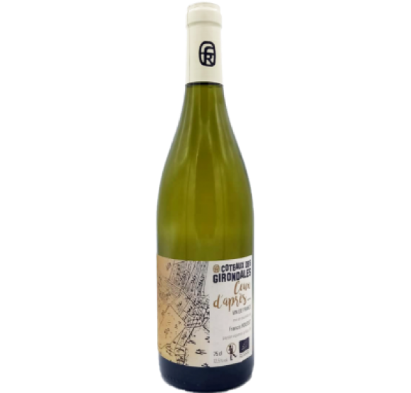

Retour aux choix des vins
Sur le fruit à noyau, belle rondeur en bouche, un vin très équilibré
10,5 °C
Haute-Savoie
Coteaux des girondales|2022
Cuvée Ceux d’apres...
Biologique

Coteaux des girondales|2022
Cuvée Ceux d’apres...